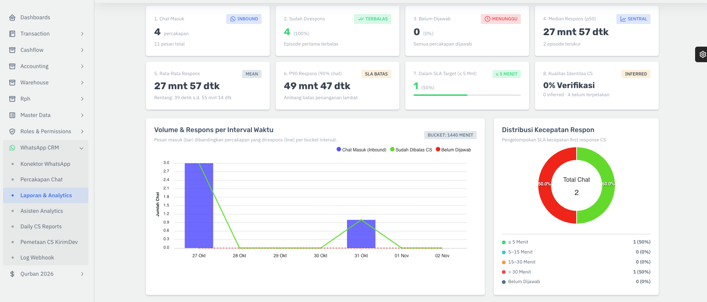
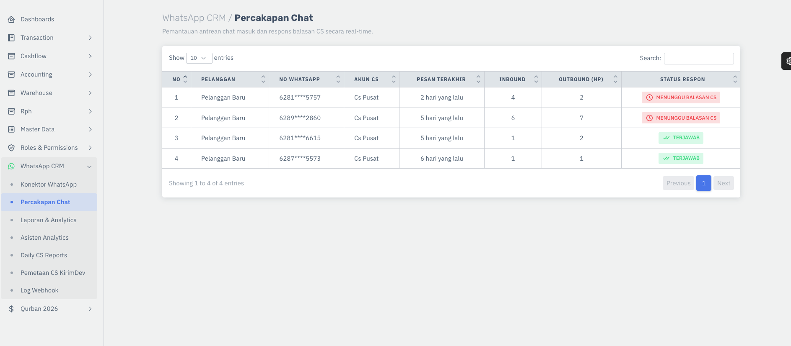

Chat ramai.
Follow-up terlupakan.
Prospek butuh tindak lanjut yang jelas, bukan hanya tersimpan di daftar chat.
Setiap lead punya langkah berikutnyaDari chat pertama sampai pesanan terkirim. Satukan pelanggan, penjualan, dan operasional dalam alur yang memang mengerti bisnis aqiqah.
✓ Khusus aqiqah Biaya transparan Satu alur kerja


Screenshot asli yang disediakan pemilik produk. Ketersediaan modul AqiqahPro mengikuti status fitur dan hasil UAT per role.
Didesain mengikuti cara kerja
bisnis aqiqah Indonesia.
Chat menumpuk, data diketik ulang, dan order berpindah tangan. Saat semuanya tersebar, hal kecil mudah terlewat. Saatnya memberi tim Anda satu tempat untuk bergerak bersama.
Prospek butuh tindak lanjut yang jelas, bukan hanya tersimpan di daftar chat.
Setiap lead punya langkah berikutnyaNama anak, paket, menu, dan alamat seharusnya mengikuti pesanan sampai selesai.
Satu data dari CS ke operasionalJumlah chat belum menjawab berapa order yang benar-benar sudah dibayar.
Pantau hasil sampai pembayaranAlur kerja yang dirancang khusus untuk aqiqah, dari kebutuhan keluarga sampai detail yang dibutuhkan tim Anda.
Kenali tampilan daftar percakapan: akun CS, pesan terakhir, jumlah pesan masuk dan keluar, serta status respons dalam satu tampilan.
Order, hewan, menu, jumlah box, produksi, dan jadwal kirim dirancang terhubung dalam satu alur.
Bedakan order, DP, pelunasan, dan refund. Lihat pendapatan berdasarkan pembayaran terverifikasi.
Lihat tampilan laporan volume chat, kecepatan respons, dan distribusi SLA. Rencana koneksi Kirimdev mendukung Coexistence sesuai konfigurasi.
Ketika order dikonfirmasi, AqiqahPro membantu tim menyiapkan hewan, bahan, RPH, dapur, pembayaran, pengiriman, dan pencatatan keuangan dari data yang sama.
Satu pesanan mengalir dari penjualan ke stok hewan, RPH, dapur, pembayaran, pengiriman, hingga laporan keuangan dari data yang sama.
Sudah digunakan di operasional IbrahimGroup — verifikasi/UAT AqiqahPro berlangsung
Gambar CRM memakai screenshot asli yang disediakan pemilik produk. Contoh order dan keuangan memakai data ilustrasi.
Setiap tim melanjutkan pekerjaan dari data yang sama. Lebih sedikit memindahkan informasi, lebih banyak melayani pelanggan.
Catat kebutuhan keluarga, tentukan CS, dan siapkan tindak lanjut.
Susun paket dan quotation, lalu teruskan detail order tanpa input ulang.
Verifikasi DP dan pelunasan, lalu teruskan pekerjaan ke tim operasional.
Pantau pengiriman, dokumentasi, dan hasil bisnis dalam satu rangkaian.
Mulai dengan operasional yang tertata.
Tambahkan CRM sesuai kebutuhan tim.
Order, pelanggan, operasional, stok, dan keuangan.
Sudah digunakan di operasional IbrahimGroup — verifikasi/UAT AqiqahPro berlangsung
Langkah pertama menyatukan chat dan pelanggan.
Core Rp800rb + CRM Rp200rb
Rencana fitur:Untuk tim yang mulai merapikan alur.
Koordinasi tim CS dengan visibilitas yang lebih baik.
Core Rp800rb + CRM Rp400rb
Seluruh rencana Starter, ditambah:Untuk follow-up dan evaluasi tim aktif.
Kontrol yang mengikuti skala bisnis dan cabang Anda.
Core Rp800rb + CRM Rp700rb
Seluruh rencana Growth, ditambah:Untuk koordinasi bisnis yang makin luas.
Transparan sejak awal. Harga dan kuota CRM adalah rencana berdasarkan PRD 1 November 2026, belum penawaran final. Lisensi Kirimdev, pesan Meta, pajak, onboarding khusus, serta penggunaan tambahan dihitung terpisah. Status setiap fitur Core mengikuti hasil verifikasi dan UAT AqiqahPro per role.
Beberapa jawaban untuk membantu Anda melihat apakah AqiqahPro sesuai dengan bisnis Anda.
Ya. Struktur pelanggan, order, paket, menu, hewan, box, dan pengiriman dirancang mengikuti kebutuhan bisnis aqiqah. Fokusnya menghubungkan pekerjaan tim dari percakapan sampai pesanan selesai.
Bisa. Core adalah fondasi operasional dengan harga Rp800.000 per bulan dan dapat dipilih sendiri. Rencana CRM Starter, Growth, dan Scale merupakan add-on yang membutuhkan Core.
Belum. Lisensi konektor Kirimdev dan biaya pemakaian pesan Meta adalah dua komponen terpisah dari harga AqiqahPro. Anda dapat memasukkan estimasinya di kalkulator agar total biaya lebih jelas.
Direncanakan dapat dilakukan melalui konektor yang mendukung WhatsApp Coexistence. Dukungan nomor, konfigurasi, dan akses perlu dikonfirmasi saat validasi dan onboarding.
Status setiap fitur Core mengikuti hasil verifikasi dan UAT AqiqahPro per role. Modul CRM diberi status “Segera hadir”. Demo di halaman ini menggunakan data ilustrasi. Saat demo bersama tim, mintalah peninjauan modul Core yang sesuai kebutuhan Anda.
Tidak. AI direncanakan sebagai pilihan dan secara default nonaktif sampai pemeriksaan serta persetujuan tenant selesai. Verifikasi pembayaran dan keputusan operasional penting tetap memerlukan manusia.
Kenali cara AqiqahPro menyatukan tim dan pekerjaan Anda.
Ceritakan kebutuhan tim Anda untuk menyiapkan sesi demo Core.